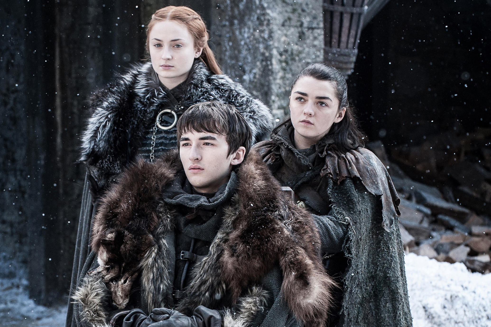
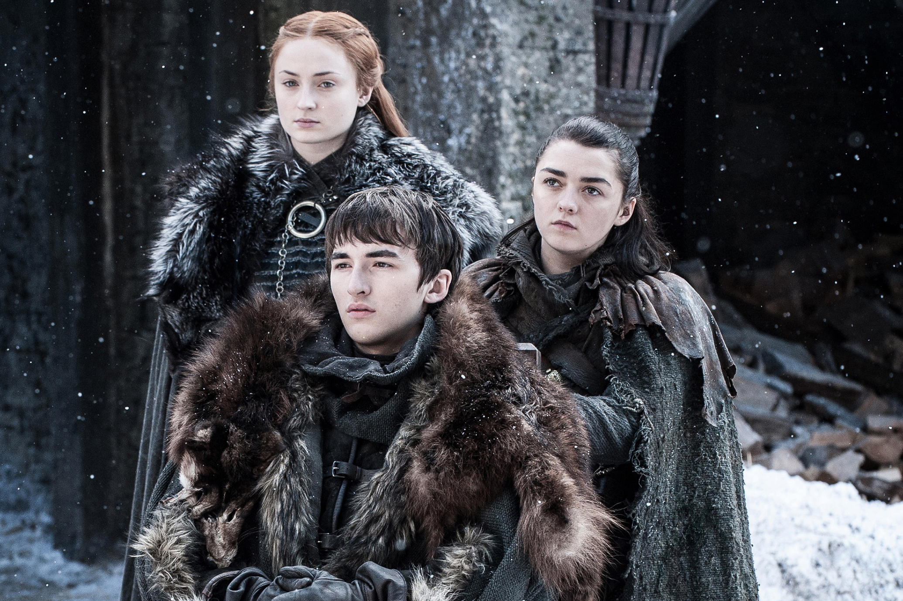

Juego de tronos (Game of Thrones en inglés) es una serie de televisión estadounidense de fantasía medieval, drama y aventuras creada por David Benioff y D. B. Weiss para la cadena HBO. Está basada en la serie de novelas Canción de hielo y fuego, del escritor estadounidense George R. R. Martin, cuyo primer libro se titula Juego de tronos.
 
